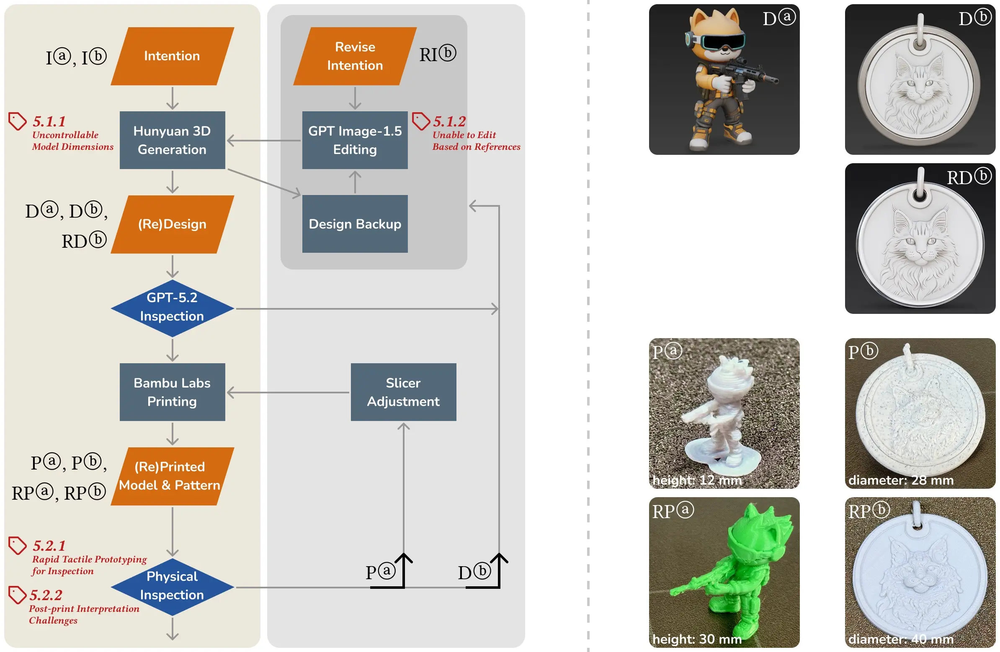
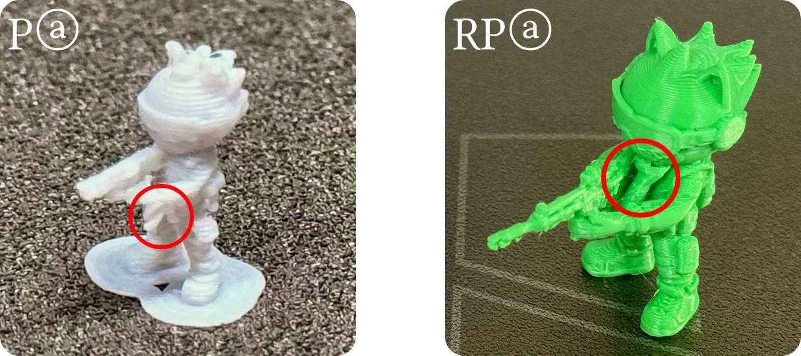

Overview

Typical personal fabrication workflows span model design, inspection, slicing, and printer operation — each step heavily
dependent on computer-based visualization. We examine whether VLM-supported chatbots and generative 3D modeling can reduce
that dependency, and where they fall short. Following a Research through Design process, our team of blind and sighted
researchers built an end-to-end AI-mediated workflow and ran two complete design-fabrication flows through it.
The blind researchers guided use scenarios, design intentions, and the selection of technological approaches from their lived
experience, while the sighted researchers implemented the system. All observations reported here come from this first-person
evaluation rather than from external participants.
AI-Mediated Workflow
The workflow is assembled entirely from standard, general-purpose AI capabilities, reflecting an approach that meets
accessibility needs with tools that are already widely available. Hunyuan3D 2.5 generates 3D designs from semantic intentions,
and the multi-modal capabilities of GPT-5.2 drive a chatbot that inspects rendered clips of those designs conversationally.
All feature operations are exposed through an HTML front-end, with speech output provided by the Web Speech API.
Because no mature tool supports direct editing of 3D format files, we implemented a detour: the model's clips are semantically
edited with GPT Image-1.5, and a revised 3D design is then re-generated from those edits. Alongside the main pipeline, a custom
printer code generator produces three canonical orthographic projections of a given model, printed flat as tactile silhouette
patterns for pre-print inspection — the rationale being that silhouette contours capture key geometric features and overall
proportions at a fraction of the time and material of a full print. Models were sliced in the Bambu Lab slicer and printed on
standard Bambu Lab A1 machines.
Design Explorations
Two flows were initiated with purely semantic design intentions. The first asked for a mascot character for a 3D shooting game
designed for blind users — an open, non-parametric brief. The second specified a keychain in quantitative terms: a 4 cm circular
disk, a 0.9 cm hole for the key ring, a 0.6 cm embossed Maine Coon cat element recognizable through touch, a 0.4 cm edge margin,
and a 0.2 cm curved edge.
After generation, we inspected each design conversationally for roughly five minutes to form a pre-fabrication understanding;
neither flow chose to edit at that stage. Following physical inspection of the prints, the mascot needed only a slicer
adjustment, while the keychain went through the editing detour with a reference-based intention — remove the outer rim and
redesign the edge after the curved edge of a waterfall display screen — effectively a request for a fillet.
Generative Modeling Limitations
The workflow made it easy to initiate personal designs, and both generated models aligned with our initial intentions during
conversational inspection. Quantitative dimensions, however, were overlooked or difficult to control. The mascot's size was
never specified, and only at physical inspection did we discover the print was 12 mm tall. The keychain was constrained by
multiple explicit dimensions, yet printed at a 28 mm disk diameter instead of the intended 40 mm. For BLV users, such
discrepancies would likely go unnoticed until the model is physically printed, since neither text-guided generation nor
chatbot descriptions reliably capture quantitative dimensions.
Reference-based editing proved to be the primary constraint on iterative design. The revised keychain matched our description
visually, but the 3D model regenerated from that image still exhibited sharp edges — geometric filleting is difficult to
capture through image-constrained generative processes alone. Image-based editing nonetheless allows more targeted
modifications than re-prompting from scratch, and remains a practical strategy within current tooling.
Reflection: design processes should surface quantitative model attributes early by integrating dimension-aware
feedback into generation and inspection, and should support semantically guided, reference-based modification.
Tactile Inspection & Post-print Interpretation

Key features the chatbot had described — the mascot's cat ears, weapon, and goggles; the keychain's embossed Maine Coon face — were confirmed to be clearly perceptible to touch. The tactile silhouette patterns printed in under 10 minutes each, against roughly 40 and 28 minutes for the complete models, and conveyed coarse scale and shape effectively, but were far less informative than a fully explorable artifact. Given the low material cost of 3D printing, full prints are the better primary inspection medium for small, quick tasks; downscaled or silhouette previews remain valuable for long or resource-intensive jobs.
Greater uncertainty arose after printing. The mascot was unintentionally printed without support structures, deforming an
overhang (left) — a failure that could not be identified by touch, because fabrication errors and intended design features were
indistinguishable. The same ambiguity appeared during support removal: even when their presence was communicated in advance,
tree supports were hard to tell apart from the model until exploratory wiggling loosened most of them, after which tactile
interpretation matched the mental representation formed during conversational inspection. Residual supports nevertheless
remained in recessed regions inaccessible to fingers (right).
Reflection: workflows should maintain a consistent reference understanding across stages — for example, using AI vision
features to compare physical artifacts against their digital models, encoding support structures with distinguishable tactile
patterns, and avoiding support generation in regions that cannot be reached by touch.
BibTeX Citation
@inproceedings{personalFabBLV,
author = {Pan, Zhaohan (Chester) and Liu, Dangqing and Lin, Chaojie and Shen, Haoxuan (Olivia) and Wei, Zhewei and Zhang, Bolin and Jiang, Zhuojian and Shen, Guangrong and Tang, Shuyi},
title = {Personal 3D Printing without Visual Dependency in the Generative AI Era: Opportunities and Challenges},
booktitle = {Companion Publication of the 2026 ACM Designing Interactive Systems Conference},
pages = {362–366},
year = {2026},
doi = {10.1145/3802974.3809447}
}